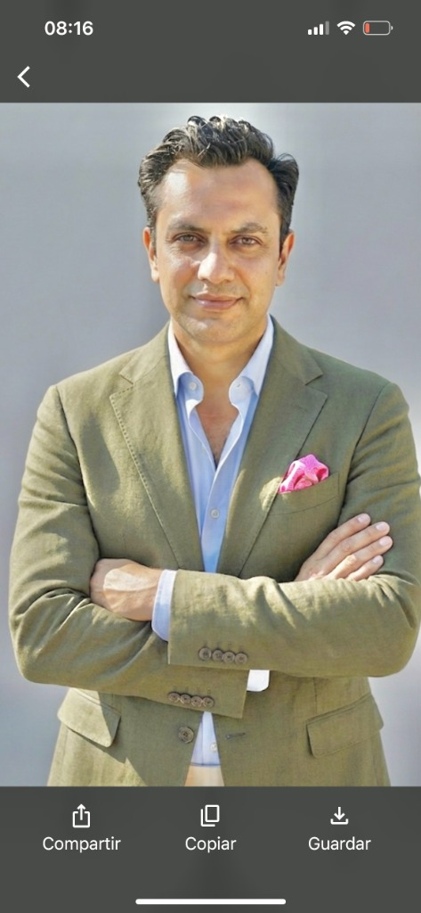

Soy Ingeniero Comercial con formación de postgrado en gestión de negocios. He tenido responsabilidad directa sobre administración, finanzas y operaciones en empresas de servicios y retail.
Mi especialidad es reemplazar el caos operativo por sistemas simples y medibles. Logro que la información clave (ventas, pagos, reclamos) se registre una sola vez y genere métricas en línea para decidir con datos.
Pontificia Universidad Católica de Chile
2022Universidad Gabriela Mistral
2012Universidad Gabriela Mistral
2005